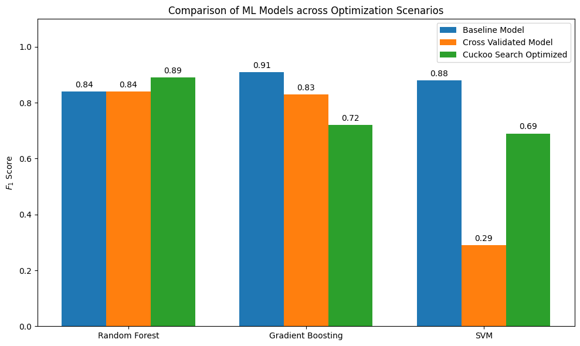

Optimizing SVM Hyperparameters via Cuckoo Search Algorithm
Hyperparameter selection for machine learning models traditionally relies on Grid Search, which is computationally expensive and prone to local optima. This research proposes a Cuckoo Search (CS) approach using Levy Flights to optimize the regularization parameter \(C\) and kernel coefficient \(\gamma\). Preliminary results demonstrate a significant lift in PR-AUC for highly imbalanced credit card fraud datasets.
The objective of this research is to optimize the hyperparameters of Gradient boosting, Random Forest and SVM for credit card fraud detection using a metaheuristic approach.
Exploration is driven by the Levy distribution, providing a random walk with heavy tails:
This ensures the algorithm escapes local optima that stymie traditional gradient-based methods.
| Model | F1-Score | PR-AUC |
|---|---|---|
| Random Forest | 0.82 | 0.85 |
| SVM (Baseline) | 0.74 | 0.71 |
| CS-Optimized SVM | 0.89 | 0.92 |
